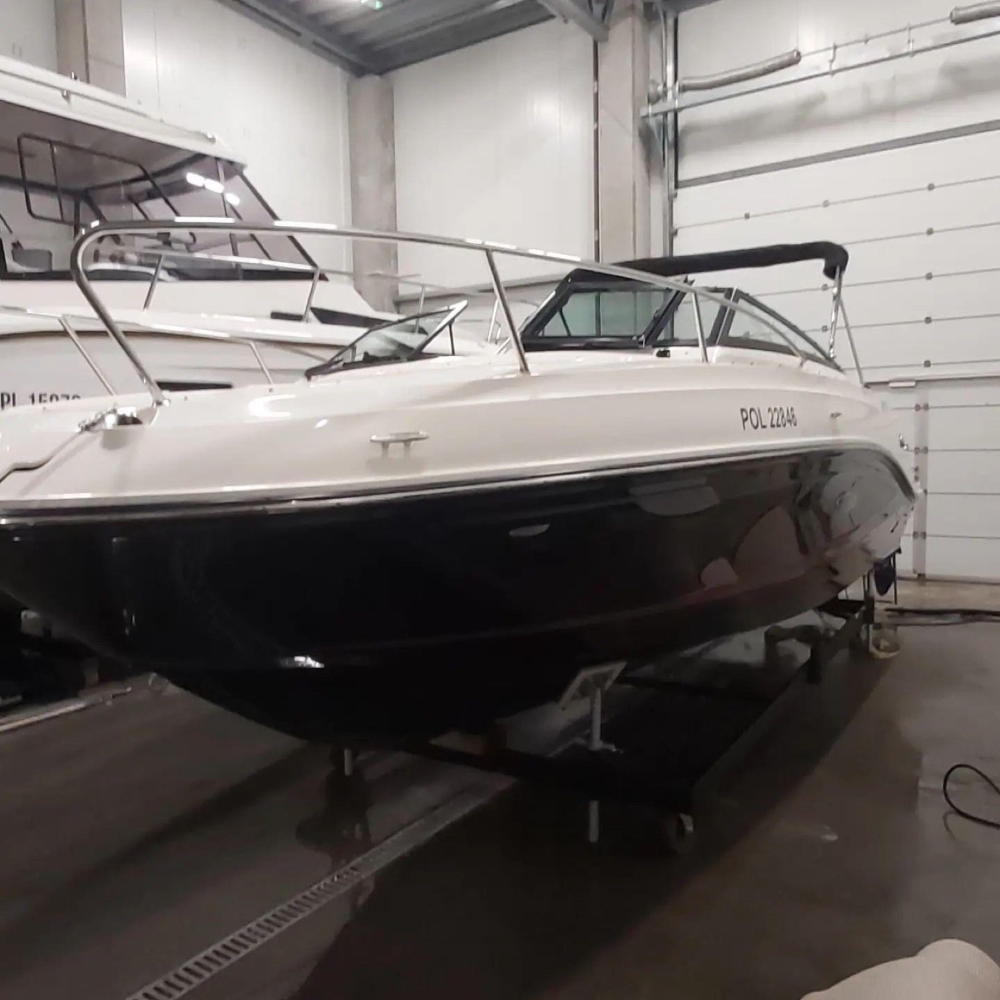

Dlaczego Warto Zimować Łódź w Radlight Giżycko?
Warunki zimowe na Mazurach (mrozy, śnieg, wilgoć i wiatr) mogą drastycznie obniżyć wartość techniczną i wizualną jachtu. Nasz kompleks hangarowy przy ul. Myśliwskiej 3 w Giżycku został zaprojektowany z myślą o najwyższych standardach ochrony jednostek pływających.
Zapewniamy pełną procedurę pozasezonową: wyciągamy jednostkę z wody, myjemy kadłub myjkami wysokociśnieniowymi, zabezpieczamy silnik płynem niezamarzającym, a po zakończeniu zimy przygotowujemy jacht do wodowania, abyś na początku sezonu mógł od razu wypłynąć w rejs!
- Hangarowanie w hali ogrzewanej (idealna temperatura przez całą zimę)
- Hangarowanie w hali suchej nieogrzewanej na posadzce przemysłowej
- Zimowanie na utwardzonym placu zewnętrznym z foliowaniem termokurczliwym
- Własny transport jachtów i slipowanie z portów: Giżycko, Wilkasy, Sztynort, Ryn, Mikołajki
- Konserwacja i serwis silników zaburtowych i stacjonarnych (Mercruiser, Volvo Penta, Yamaha, Honda)
- Polerowanie żelkotu, mycie dna i malowanie antyporostowe (antifouling)
Hale Wysokiego Składu
Przestronne wrota wjazdowe pozwalające na bezpieczny wjazd jachtów o wysokości do 4,5 metra.
Serwis Silników
Wymiana filtrów, oleju w przekładniach, świec oraz pełna zimowa konserwacja instalacji wodnych.
Polisa Ubezpieczeniowa
Każda jednostka na terenie naszego kompleksu jest objęta całoroczną ochroną ubezpieczeniową.
Konserwacja Baterii
Możliwość podłączenia akumulatorów pod inteligentne ładowarki buforowe podtrzymujące żywotność.
Hangarowanie Jachtów w Obiektywie



Pakiety Zimowania Jachtów w Giżycku (Sezon Październik – Maj)
| Wariant Zimowania | Charakterystyka Miejsca | Zabezpieczenie | Wycena |
|---|---|---|---|
| Hala Ogrzewana Premium | Stała temperatura powyżej 10°C, posadzka bezpyłowa, zasilanie 230V | Brak ryzyka zamarznięcia instalacji, sucho, czysto | Cena za m² powierzchni |
| Hala Sucha Nieogrzewana | Zamknięty, szczelny budynek chroniący przed deszczem, śniegiem i UV | Wymaga zimowej konserwacji silnika | Atrakcyjna stawka sezonowa |
| Plac Zewnętrzny z Foliowaniem | Utwardzony, monitorowany plac + kokon z folii termokurczliwej | Wentylacja kominkowa, ochrona przed opadami | Wariant ekonomiczny |
| Pakiet All-Inclusive | Slip + transport + mycie + konserwacja silnika + hala + wodowanie na wiosnę | 100% spokoju dla właściciela łodzi | Indywidualny kosztorys |
FAQ — Zimowanie Łodzi Giżycko
Miejsca w halach ogrzewanych zapełniają się najszybciej. Zalecamy rezerwację już w sierpniu i wrześniu, aby zagwarantować sobie dogodne stanowisko.
Tak, dysponujemy profesjonalnymi stojakami i łożami pod jachty żaglowe oraz podpory pod motorówki. Jeśli posiadasz własną przyczepę podłodziową, jednostka może zimować bezpośrednio na niej.
Tak! Po wcześniejszym kontakcie z bosmanem możesz odwiedzić swoją jednostkę, dokonać własnych prac doposażeniowych lub sprawdzić stan wyposażenia.
Zarezerwuj miejsce na zimowanie w Giżycku
Podaj wymiary łodzi, a w ciągu 24h otrzymasz szczegółową ofertę cenową.